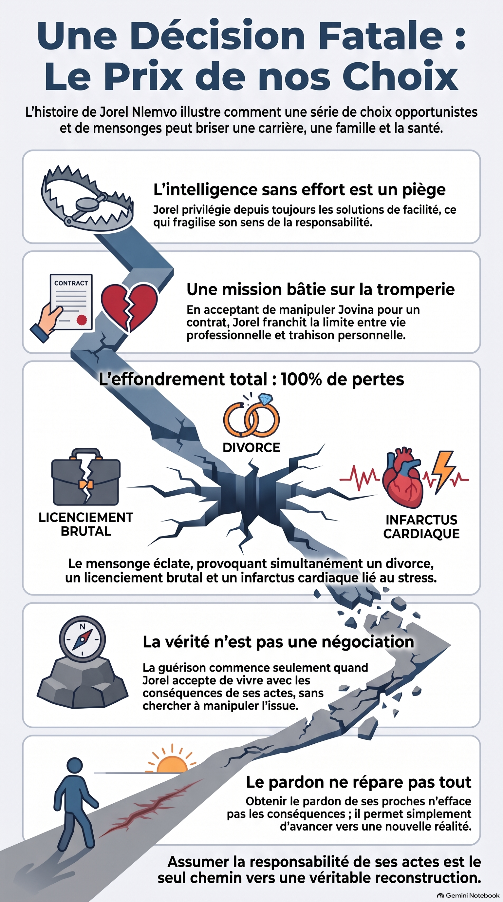

Dans Une décision fatale, les conséquences ne
surgissent pas d’un seul acte spectaculaire. Elles naissent d’une
succession de choix, de silences, de compromis et de décisions
prises sans en mesurer pleinement le prix.
La réaction en chaîne d’une décision
Jorel ne cherche pas à détruire sa vie. Il cherche d’abord une
opportunité, puis accepte une rencontre, repousse une vérité et
croit pouvoir maîtriser les conséquences de ses choix. Pourtant,
chaque étape ouvre une nouvelle brèche.

Le prix de nos choix : une décision peut déclencher une chaîne de conséquences irréversibles.
Les grands thèmes du roman
Le choix
Le roman interroge ce moment où une possibilité semble anodine,
mais devient le premier pas d’une trajectoire impossible à
arrêter.
La responsabilité
Les personnages découvrent que choisir ne consiste pas seulement
à suivre un désir ou une opportunité : c’est aussi accepter ce
que ce choix produit chez les autres.
Le silence
Les non-dits, les omissions et les vérités repoussées alimentent
progressivement la défiance et l’éloignement.
Le pardon
Le pardon n’efface pas nécessairement les blessures. Il pose une
question plus difficile : comment continuer à vivre après une
vérité qui a tout déplacé ?
Anatomie d’une chute
Le dossier d’analyse approfondit la progression de Jorel, les
mécanismes de l’intrigue et les conséquences psychologiques,
familiales et morales de ses décisions.